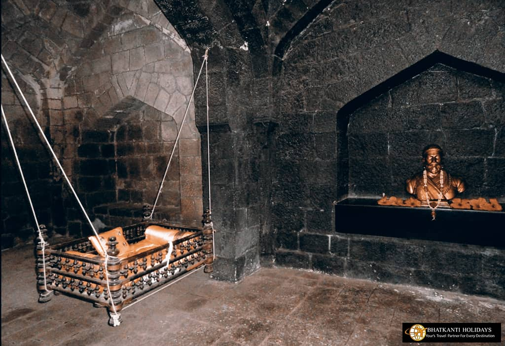

Maharaj Born

Chhatrapati Shivaji Maharaj,
the founder of the Maratha Empire, was born on February 19, 1630, at Shivneri Fort, near Junnar in Maharashtra. His mother, Jijabai, was a deeply religious and strong-willed woman, and his father, Shahajiraje Bhosale, was a respected general in the Deccan. From a young age, Shivaji Maharaj was inspired by the tales of Ramayana and Mahabharata, instilling in him the values of courage and justice. Under his mother's guidance, he developed a strong sense of pride for his land and a vision of Swarajya (self-rule).